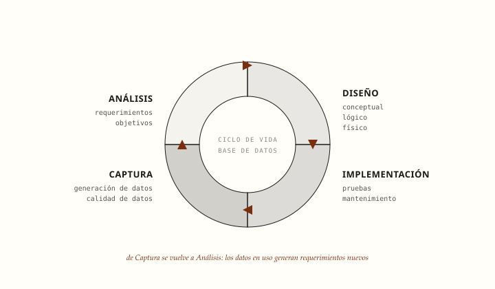

Lección 06 · Unidad 1 · Sistemas de Gestión de Base de Datos
El ciclo de vida de una base de datos
Cuatro etapas, en círculo. Es la pregunta 1 de un parcial tomado, y se pide graficar y explicar: el dibujo vale tanto como el texto.
01Cómo viene la pregunta
Textual, del parcial en raw/Examen1.webp:
"1) Grafique y explique que es Ciclo de Vida de un Sistema de información."
Dos verbos, dos entregables. Graficar es el círculo de cuatro etapas. Explicar es una línea por etapa más una frase sobre por qué es un ciclo y no una lista. Si hacés sólo una de las dos cosas, te falta la mitad del punto.

02Las cuatro etapas
| Etapa | Qué produce | Cómo lo dice la cátedra |
|---|---|---|
| Análisis | Requerimientos y objetivos. | "Plantea la definición de objetivos y genera una especificación de requerimientos en base a las necesidades de la organización." |
| Diseño y modelamiento de datos |
Conceptual → lógico → físico. | "Se definen en forma creciente en términos de especificidad los elementos que constituirán el sistema de información. Esta etapa define los objetos (entidades) que deben ser utilizados." |
| Implementación | Elección del motor, pruebas, mantenimiento. | "Según los objetivos a realizar y los objetos definidos en la etapa previa darán paso a la selección de la base de datos y metodología a implementar." |
| Captura y operación |
Generación de datos y calidad de datos. | "Involucra a los usuarios finales accediéndola constantemente, y a los desarrolladores realizando programas que permitan mantenerla actualizada y responder a nuevos requerimientos." |
La etapa de Diseño se abre en conceptual → lógico → físico, y no es un capricho de la cátedra: es el mismo recorrido de los tres niveles y es exactamente lo que vas a hacer en el DER. Cada paso agrega especificidad y le saca generalidad: el conceptual no sabe qué motor vas a usar, el físico ya sabe hasta el índice.
Si en la respuesta escribís esos tres sub-pasos dentro de Diseño, mostrás que entendiste el ciclo entero, no que memorizaste cuatro palabras.
Buscás "ciclo de vida" y te aparece el de ingeniería de software: análisis de requerimientos → diseño → implementación → testing y validación → despliegue → mantenimiento, en línea, con una flecha de vuelta rotulada "nuevas necesidades". Ése no es el que se toma.
Tres diferencias que te delatan si dibujás el equivocado:
- El de software tiene seis etapas; el de la cátedra tiene cuatro.
- El de software es lineal con un retorno; el de la cátedra es un anillo, sin principio ni fin marcados.
- El de software no abre Diseño en conceptual/lógico/físico, y no tiene Captura — que es justo la etapa que existe porque estamos hablando de datos, no de código.
03Por qué es un ciclo, y no una lista
Acá está el punto conceptual, y es el que separa la respuesta de 6 de la de 9. Un proyecto de software se termina. Una base de datos no se termina: entra en producción y ahí recién empieza a vivir.
La etapa de Captura es la que cierra el anillo. Mientras los usuarios finales cargan y consultan datos, pasan dos cosas al mismo tiempo:
- Aparecen requerimientos nuevos. La organización cambia, y el modelo que servía deja de servir. Eso reabre el Análisis.
- Aparecen problemas de calidad de datos. Duplicados, campos que la gente usa para algo distinto de lo que se pensó, nulos donde no debería haberlos. Eso reabre el Diseño.
La slide 20 dice que Operación y Captura "requieren de la utilización del DBMS, especialmente en las tareas de definición y manipulación de la Base de Datos". Traducido: el ciclo de vida se conecta con el DBMS y con DDL/DML. Si la pregunta 1 y la pregunta 4 del parcial (capacidades del DBMS) caen juntas, es porque en la Clase 1 vienen juntas.
04La respuesta, tal como la escribirías
Una hoja, sin apuro. Primero el dibujo — círculo, cuatro cuartos, flechas en sentido horario, los nombres adentro o al lado. Después el texto:
El ciclo de vida es la secuencia de etapas por las que atraviesa una base de datos desde que se detecta la necesidad hasta que está en operación, y que se repite, porque la operación genera nuevas necesidades.
Análisis: se definen objetivos y se releva una especificación de requerimientos según las necesidades de la organización. Diseño y modelamiento: se definen los objetos o entidades del sistema, con especificidad creciente — conceptual, lógico y físico. Implementación: se selecciona el motor y la metodología, se construye, se prueba y se mantiene. Captura y operación: los usuarios finales usan la base y los desarrolladores la mantienen actualizada; acá importan la generación y la calidad de los datos.
Desde la operación surgen requerimientos nuevos que vuelven a abrir el análisis: por eso se grafica como un ciclo cerrado y no como una lista.
05Práctica
En el parcial dibujás un diagrama lineal de seis cajas que termina en Despliegue → Mantenimiento, con una flecha de retorno. ¿Qué pasa?
Estás decidiendo si el modelo va a PostgreSQL o a SQL Server, y con qué metodología se va a cargar. ¿En qué etapa estás?
¿Qué justifica dibujarlo como círculo en vez de como lista?
raw/Clase 1 Udeci.pptx, slides 19 y 20. La slide 19 tiene el
gráfico del anillo; la slide 20 tiene el texto de las cuatro etapas, que es el que está
citado entre comillas en esta lección. El mismo contenido está en
raw/Material_Examen/unidad 1.pdf, p. 5.
El gráfico original de la cátedra, extraído del pptx, está en
assets/diagrams/ciclo-de-vida-bd-catedra.png — miralo una vez para
quedarte con la forma, y después dibujalo de memoria.
Soy tu profe acá. Dibujá el círculo en una hoja sin mirar y escribí las cuatro etapas con una línea cada una. Pasámelo y te lo corrijo con criterio de parcial: lo que miro es si aparecen especificidad creciente, conceptual/lógico/físico y el cierre del ciclo.